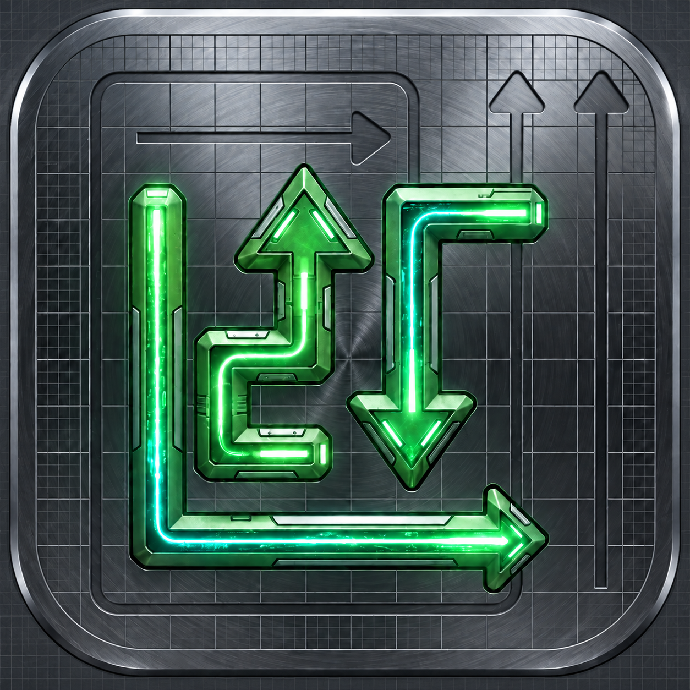

Read the board
Follow the direction of each arrow and look for an unobstructed route to the edge. A clear path is your first opportunity.
SMALL MOVES. BIG DISCOVERIES.
A fresh perspective is all it takes.
Discover thoughtful puzzles from Seekers Quest.

01 / OUR FEATURED GAME
LOGIC · STRATEGY · DISCOVERYOne clear goal.
A wonderfully tangled journey.
Untangle a board of interlocking arrows, one thoughtful move at a time. Every arrow has a direction. Every move opens a possibility. Find the right sequence and guide them all to freedom. Explore a wide range of levels that grow more intricate as you progress, with tougher layouts and new challenges to master along the way.
PLAY IN YOUR LANGUAGE
Make yourself at home in Arrow Quest. Choose your preferred app language in Settings and enjoy the puzzle journey in a language that feels familiar.
SEE IT IN MOTION
Watch the Arrow Quest trailer and get a feel for the world behind every move.
ARROW QUEST: WAY OUT — GAME TRAILER
02 / THE ART OF THE EXIT
Look closely. Think ahead. Make space.
The best move is not always the first one you see.
Follow the direction of each arrow and look for an unobstructed route to the edge. A clear path is your first opportunity.
Tap an arrow to send it along its path. Clear the right arrows first to open routes for the ones still blocked.
Empty the board to complete the level. Protect your three hearts and aim for a stronger star rating with every attempt.
03 / KEEP YOUR CURIOSITY MOVING
From your first clear path to intricate silhouettes,
Arrow Quest gives you more to think about.
Build your instincts on rectangular and square boards. Progress from guided introductions to denser layouts that reward planning and patience.
FIND YOUR RHYTHMTake on dense silhouettes inspired by animals, objects, and geometric forms. Later Boss levels add a timer to put your decision-making to the test.
THINK BEYOND THE GRIDNavigate complex, tightly packed shapes where every opening matters. Timed challenges at higher levels demand both precision and a clear plan.
MAKE EVERY MOVE COUNTA change of direction. Deflector dots redirect arrows, while paired colors bring an extra layer of strategy.
Make the board your own. Zoom and pan through detailed puzzles, with light and dark themes to suit your play.
04 / THE STUDIO BEHIND THE QUEST
Seekers Quest creates games around the pleasure of figuring things out. Our approach brings together clear mechanics, considered challenges, and the satisfaction of finding your own solution.
Arrow Quest: Way Out is an invitation to slow down, look again, and discover what your next move can unlock.
Let’s talkYOUR NEXT QUEST STARTS WITH A QUESTION.
Questions about Arrow Quest?
We’d love to hear from you.